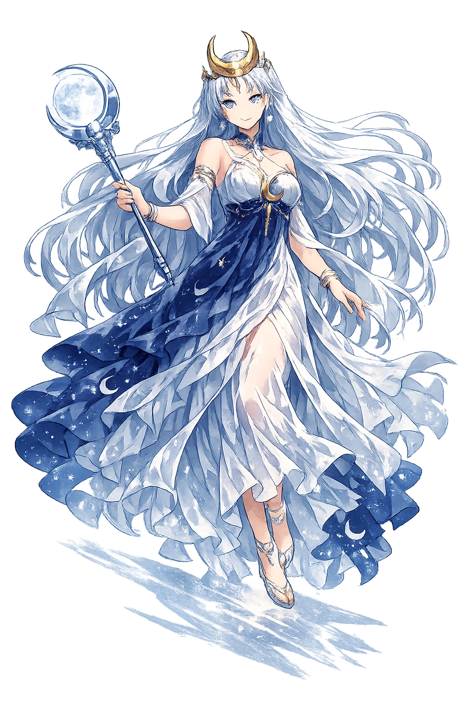

The Living Myth
Moon, Night Light · The Radiant · Driver of the Silver Chariot

Stories of Selēnē
Selḗnē rules the night the way Hēlios rules the day — but where his light reveals, hers conceals, transforms, and bewitches. Her myths are fewer than her brother's because the night was less personified in early Greek poetry; what survives is a handful of late, luminous stories that turned the moon's monthly rhythm into love, sleep, and sorcery.
The fullest telling of Selḗnē's love survives in Cicero (Tusculan Disputations 1.38.92, quoting the lost Greek poet) and the mythographers: the goddess caught sight of Endymion, a shepherd or king of Elis or Caria, and begged Zeus to keep him forever. Zeus granted immortality in the form of eternal sleep, and Selḗnē descends nightly to his cave on Mount Latmus to gaze at him. Theocritus (Idyll 3.49–51) already knows the story as proverbial: the lovesick goatherd wishes he were Endymion 'sleeping the endless sleep' that Selḗnē chose for him. Apollodorus (1.7.5) and Pausanias (5.1.4) both report the Elean version, where Endymion falls into everlasting slumber by Zeus's decree 'because of his beauty'. Some late accounts make Selḗnē the mother of his fifty daughters — one for each month of the Olympiad cycle. The myth reads as the moon's own condition: she who governs the tides of waking is herself fixed forever beside a beloved who cannot wake.
The short Homeric Hymn to Selene gives the goddess her fixed portrait: a radiance that lifts from her immortal head and a great circle of light as she yokes her horses and travels the night, while the hymn joins her to her brother Hēlios — the two lights ruling in turn. Hesiod supplies the genealogy: Hyperion lay with Theía, 'who bore great Hēlios and bright Selḗnē and Ēōs, who brings light to mortals and to the deathless gods' (Theogony 371–374). Hellenistic poets enrich the mechanics: she climbs from the Ocean stream as her brother sinks into it, so the two great lights never meet — the sky's oldest hand-off, marked each dusk and dawn. Her iconography fixes the rest: a billowing veil, a golden diadem, a silver car. The myth gives the night a face without giving it a story: Selḗnē is cosmic routine made personal — the regular return of a light that asks nothing of the world below and receives, in return, its dreams.
In its closing lines the Homeric Hymn to Selene records the goddess's one Olympian union: the son of Kronos lay with her in love, and she bore a daughter, Pandia — 'All-Bright' or 'All-Divine' — the fairest of the immortals, who glories in the radiance of the full moon (32.14–16). The tiny genealogy quietly explains the moon's phases: the goddess swells with light, wanes into concealment, and returns to fullness — her pregnancy written across the month. Later antiquarians connected the story with the Attic festival of the Pandia, celebrated at Athens in early spring and plausibly an old moon-feast in honor of the full moon's daughter. One short hymnal notice is all that survives of the myth, and it is enough: it makes Selḗnē not only a lamp of the night but a mother, gives her radiance a lineage, and ties the city's ritual calendar to her monthly swelling. The full moon, for the Greeks, was a birth remembered.
The magical Selḗnē is best seen through Simaetha, the jilted girl of Theocritus' second Idyll, who wheels a bronze rhombus, burns bay and barley, and chants her binding spell under the goddess's wheeling light — then begs Selḗnē herself to 'draw down' her erring lover, since the moon's silent tracks govern her charm. Hellenistic and Roman literature made Thessaly the homeland of moon-drawers, and Lucian (Philopseudes) has a Hyperborean wizard snatch the moon bodily from the sky. In the Greek Magical Papyri, Selḗnē — syncretized with Hekátē, Artemis, and Isis — presides over binding spells, dream-sending, and transformation; the goddess of the mutable was the natural patron of change wrought by art. The tradition grows from a simple observation into a doctrine: the moon rules whatever waxes and wanes, and whoever masters the moon masters change itself.
Night, Cycles, Magic, and Sleep
Selḗnē is the moon personified: a goddess who drives her silver chariot through the night, governs the cycle of the month, and presides over dreams, sleep, and magic. Daughter of Hyperion and Theía, sister of Hēlios and Ēōs, she is the night's own light. Her myths are few and mostly late — but the eternal sleeper, the silver car, and the drawn-down moon never left the imagination.
She crosses the night sky in a car drawn by horses, the cool counterpart to Hēlios's golden chariot (Homeric Hymn to Selene).
The month is hers; she governs menstruation, tides, planting, and the counting of days.
Hekátē's ally; Thessalian witches 'drew down the moon' to work binding spells (Theocritus, Idyll 2).
She begged Zeus for Endymion's eternal youth — and received for him an eternal sleep on Mount Latmus.
From the original script to the living URL
Σελήνη
The name in its original Greek form. Selēnē (Σελήνη) is attested in the source tradition — “Moon, light (from σέλας)”. Its long vowels and acute accents carry the full phonetic and orthographic weight of the source tradition.
selene
Reduced to plain selene, the name loses everything that made it specific: long vowels and acute accents. What remains is an ASCII string that machines can parse but that no longer speaks with its original voice.
Selēnē
The Unicode restoration recovers what ASCII flattened. Selēnē restores long vowels and acute accents, returning the name to its original written dignity. The domain encodes to Punycode, but the browser displays the truth.
Selēnē.com → xn--seln-dvab.com
The non-ASCII characters in Selēnē are encoded while the ASCII remains visible. To the DNS, it is Punycode. To humanity, it is Selēnē.
Owned, ideal, and ASCII forms of Selēnē
Selēnē
Restores Σελήνη. The live temple domain — selēnē.com.
Selḗnē
Restores Σελήνη. Stacked macron+acute on the stressed long vowel, matching Greek Σελήνη; philologically ideal but often untypeable on phones.. Not in the PuniCodex collection.
selene
Flattens Σελήνη. The plain ASCII fallback — what DNS and legacy systems see.
How Selēnē was spoken
How Selēnē travels from ancient script to the modern URL
Greek Σελήνη; from σέλας “light, brightness"; the moon-goddess.
Moon, Night Light
The Unicode restoration Selēnē preserves Greek stress and length; the ASCII form selene loses these features.
Selḗnē is the goddess of reflected light — and of everything reflection makes possible. She does not generate radiance; she transforms what Hēlios gives. That is her power and her limitation, and the Greeks knew both: she is the light by which secrets are kept and by which spells are worked, the lamp of thieves and lovers and the dying. The night reveals what the day hides: dreams, transformations, the slow processes of waxing and waning that govern bodies and fields.
Enter Extended Lore